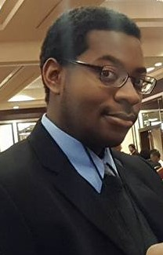

Greg De Leon
About Me...
My name is Greg De Leon and I really love to code. Since my first code experience I realized that this career choice would have been a great second choice if I ever had to do it all again in college. After getting my first job as a Controls Engineer I realized the parts of the job I loved the most were the coding challenged that I would give myself. Thus, why I am here turning a new leaf and hoping for a positive experience.